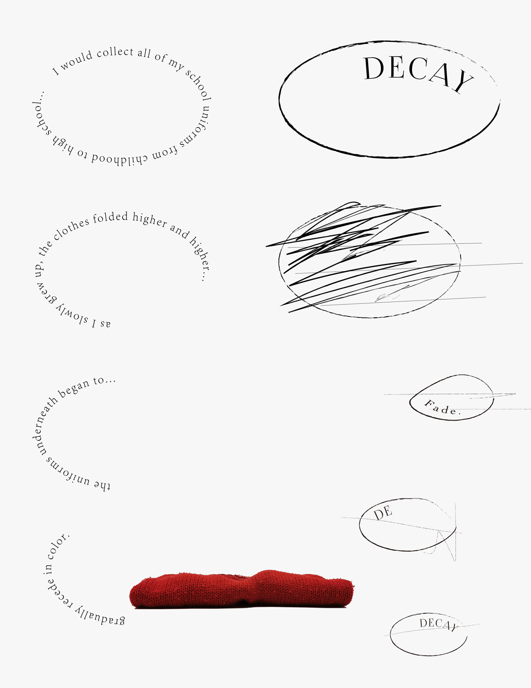

In a fast-paced life, people's perception of time is getting weaker and weaker. We rely on the clock, the electronic time on our cell phones...the most common phrase we hear is "What time is it?" But if we leave the life of having time ......
In this memo, I will record stories about time in nature.
You probably can't imagine that kind of life without time. Because you know the months, years, weeks, and days. You have clocks on your walls and watches in your car. You have alarms, schedules, and dinner and movie schedules. But the only thing you don't see is time guarding. The birds don't chirp late, the dogs don't need to be on, look at their watches, and the yo-yo deer never bother with birthdays. Only humans need to ring the clock to report the time; thus, humans are suffering from a fear that no other animal suffers from. That is, the fear that time will slip away...
I would collect all of my school uniforms from childhood to high school and as I slowly grew up, the clothes folded higher and higher.
the uniforms underneath began to gradually recede in color.

A candle burned all night and in the early morning it went out. I know it was 12 hours.